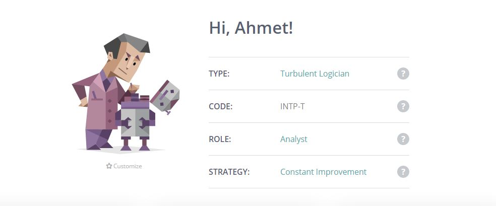
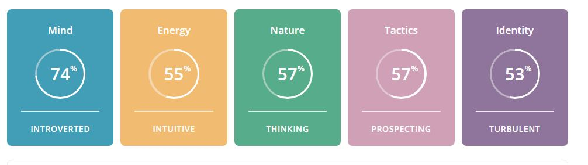
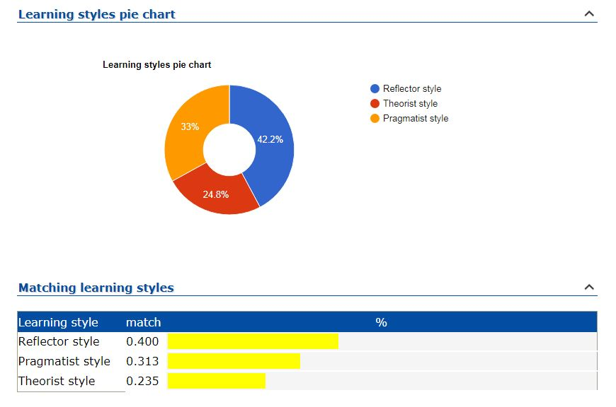
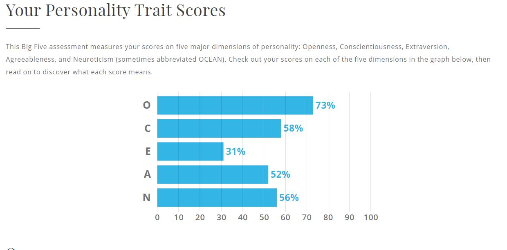

Ahmet Polat
Student Number : s3870017
Github Username: polatzinho
Myers–Briggs Type Indicator
 
What do the results of the Myers Briggs test mean for me?
According to the test results, I am a Turbulent Logician. The title made me scare a little bit at the beginning, however, I found the result of these tests highly accurate. Even though I try to be more extraverted, I am an introverted person in overall. I sometimes pay too much attention to the details and risk to miss the deadlines with last-minute modifications. If the change will make the product function better, worth risking it. I am a highly observant person. I may seem quiet from outside, however listening to others the majority of the time and not talking as much as others do not mean that I am not listening. In fact, I am listening, observing, and analyzing everything. Everything works well in my head, however, when I try to explain the complex thing to other people, I may get frustrated.
How do I think these results may influence my behaviour in a team?
I will function well with a small number of groups. I am sure that I will bring a unique perspective to the group with lots of different and bright ideas. However, explaining what I have in my mind may other people feel that I am feeling frustrated. No matter what I will make sure that a high-quality outcome will be delivered before the due date. Even though this means that I will spend days on the chair and make sure that we went through every single bit of the details.
How should I take this into account when forming a team?
When forming a team, I should try to work with likeminded people or who would appreciate the way that I want to deliver a project. The main reason is, I would never deliver a project to get a passing mark and I would be happy with it!
Myers–Briggs Type Indicator

What do the results of the Learning Style Test mean for me?
My primary learning style is a reflector, the secondary style is pragmatist, and tertiary style is a theorist. Before doing anything, I prefer to think in thoroughly instead of rushing into.
Collection information and analyzing them thoroughly are important parts of doing something even though it may mean that I will end up spending significantly more time.
I am an experimenter, likes to practice seeing if they really work. If they work, I should know how they work. This is purely to understand how things are coming together in theory.
I believe the test result is fairly accurate, this explains a lot why I spend extra time when I install things by looking at the guidelines. Instead of just building as per the plan,
I try to visualize in my head in detail before starting and try to make sense of why they had to build in a certain way.
How do I think these results may influence my behaviour in a team?
I may require more upfront time to things thoroughly in teamwork. An impatient person who wants to get the things done as quickly as possible may feel frustrated with me. I may feel more comfortable in paired discussions and constant feedback from the other will improve the things during the team studies. Observing everything thoroughly and thinking all the details may get tiring. I may require short breaks to recover.
How should I take this into account when forming a team?
I will need a group work who will understand the importance of thinking all the possible angles while working on a project. Once we get the things done, even at the last minute, it will work as it should. I believe I should work with people who would appreciate that delivering a half-done job is not and never will be acceptable. I may also need to compromise a little to find a fine balance.
Learning Style Quiz

What do the results of the Big Five mean for me?
According to the Big Five assessment I have a tendency to think complex ways and I may seek out complex forms of self-expression. Fairly organized with average discipline with mid Conscientiousness.
I have an introvert personality, with a simple, quiet life lifestyle and rarely seek attention from others. I have a mid-level score for Agreeableness Neuroticism,
I can neither have a clear conscious of the things I have done wrong, nor panic and lose my sleep over it.
Even though I agree with 80% of the results, I kind of disagree with Neuroticism as I always feel responsible for my mistakes in the past and still feel sorry for them.
I believe this important to learn a lesson from them to become a better person.
How do I think these results may influence my behaviour in a team?
It seems like I can somehow manage to start in the middle ground. I will neither put myself ahead of others nor sacrifice from the things important for me. Trying to express my ideas in complex form may complicate the things a little bit. I should manage to simplify ways to express myself and my ideas in a team environment.
How should I take this into account when forming a team?
I should be upfront with my teammates about how I think, how I operate, and how I like to get the things done. Outlining my characteristic and personality upfront will prevent possible misunderstandings during the project's lifetime.
References
16personalities.com. 2020. Welcome! | 16Personalities. [online] Available at: [Accessed 16 September 2020].
Emtrain.eu. 2020. Learning Styles Quiz. [online] Available at: [Accessed 16 September 2020].
Truity. 2020. The Big Five Personality Test. [online] Available at: [Accessed 16 September 2020].